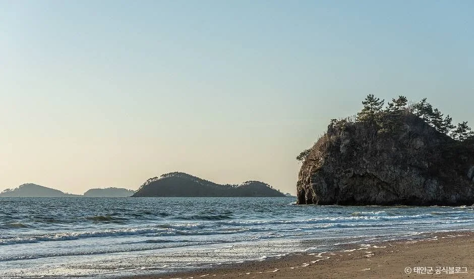
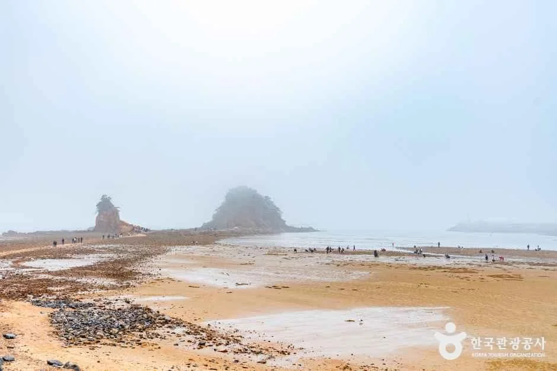
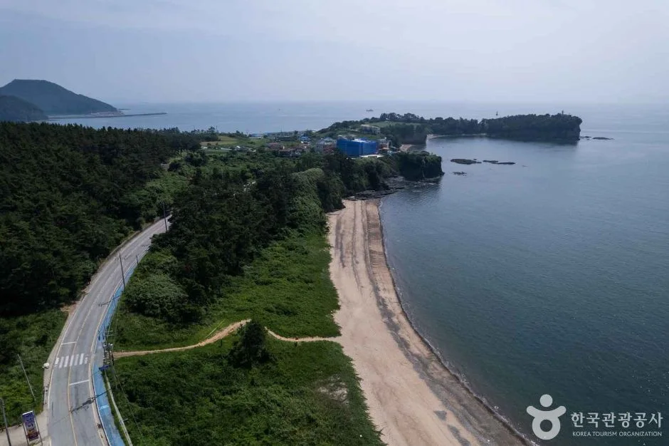
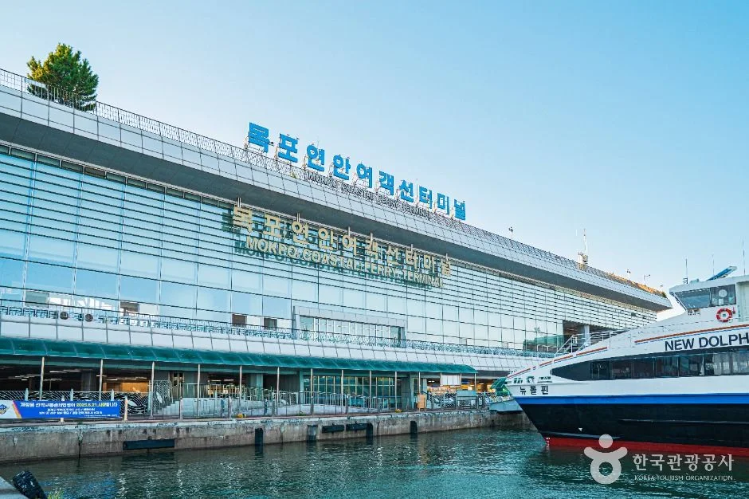
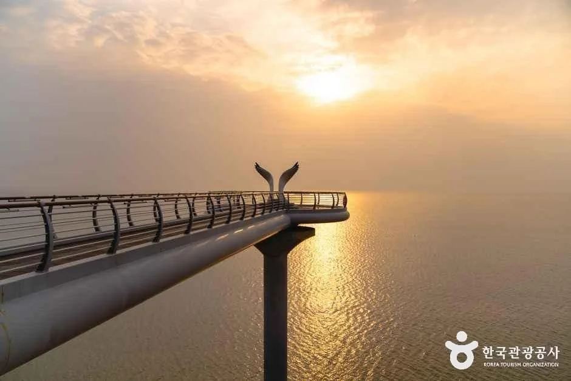

▲ 영광 백수해안도로. 백수읍 길용리에서 백암리 석구미까지 약 16.8km가 해안선을 따라 이어진다 ⓒ 한국관광공사 (공공누리 제1유형)
드라이브 코스를 고를 때 대개 목적지를 먼저 정합니다. 그런데 서해안에는 방향 자체가 목적이 되는 도로가 있습니다.
77번 국도입니다. 부산에서 시작해 파주에서 끝나는, 대한민국에서 가장 긴 국도입니다.
1. L자로 꺾이는 국도
77번 국도의 성격은 노선도를 보면 바로 이해됩니다. 부산에서 출발해 남해안을 따라 서쪽으로 가다가, 전남 서쪽 끝에서 방향을 틀어 서해안을 따라 북쪽으로 올라갑니다.
| 항목 | 내용 |
|---|---|
| 기점 | 부산광역시 중구 옛시청 교차로 |
| 종점 | 경기도 파주시 문산읍 자유 IC |
| 형태 | L자형 — 남해안 서진 후 서해안 북상 |
| 특징 | 국내 최장 국도 · 다수 구간이 해안선을 따라감 |
📍 서해안 구간이 특별한 이유
서해안을 북상하는 구간에서는 바다가 차의 왼쪽에 놓입니다. 해는 그 바다 너머로 집니다.
즉 운전석에서 보는 방향에 일몰이 걸립니다. 조수석 승객이 아니라 운전자가 보게 되는 구조인데, 이 때문에 안전 문제도 함께 생깁니다. 해가 낮게 깔리는 시간대의 역광은 신호와 보행자를 가립니다.

▲ 태안 해변길 5코스 노을길. 해안도로에서 바로 내려설 수 있는 해변이 이어진다 ⓒ 태안군
2. 안면도, 약 11.9km
수도권에서 가장 접근하기 쉬운 낙조 구간은 충남 태안의 안면도입니다.
| 항목 | 내용 |
|---|---|
| 경로 | 백사장 → 두여 → 꽃지해수욕장 |
| 거리 | 약 11.9km |
| 성격 | 짧지만 해변 접근점이 촘촘함 |

▲ 꽃지해수욕장. 안면도 해안 구간의 종착점 격이다 ⓒ 한국관광공사 (공공누리 제1유형)
12km는 차로 20분 남짓입니다. 그래서 이 구간은 달리는 코스라기보다 세우는 코스에 가깝습니다. 해변 진입로가 짧은 간격으로 이어져 원하는 지점에서 내리면 됩니다.

▲ 부안 변산 구간. 도로가 해안선을 그대로 따라가 커브마다 화면이 바뀐다 ⓒ 한국관광공사 (공공누리 제1유형)
3. 영광 백수해안도로, 약 16.8km
77번 국도에서 가장 이름이 알려진 구간은 전남 영광의 백수해안도로입니다.
| 항목 | 내용 |
|---|---|
| 길이 | 약 16.8km |
| 구간 | 백수읍 길용리 ~ 백암리 석구미 |
| 2006년 | 건설교통부 한국의 아름다운 길 100선 선정 |
| 2011년 | 국토해양부 제1회 대한민국 자연경관대상 최우수상 |
| 해안 노을길 | 도로 아래 목재 데크 3.5km — 걸어서 이동 |
| 특징 | 도로와 바다 사이 고도차가 커 내려다보는 시야 |
안면도와 성격이 다릅니다. 안면도가 해변 높이에서 바다와 나란히 간다면, 백수해안도로는 비탈 중턱을 따라가며 바다를 내려다봅니다. 같은 낙조라도 화면이 완전히 다릅니다.
▲ 백수해안도로 노을전망대. 차를 세우고 볼 수 있는 지점이 구간 곳곳에 있다 ⓒ 한국관광공사 (공공누리 제1유형)
4. 변산 구간
안면도와 영광 사이에는 부안 변산이 있습니다. 고사포에서 격포까지 약 8km 구간이 해안선을 바짝 따라가고, 채석강과 격포항을 거쳐 곰소항까지 이으면 약 35.4km가 나옵니다.
성격은 안면도와 백수의 중간쯤입니다. 해변 높이도 아니고 높은 비탈도 아닌, 낮은 구릉을 넘나드는 선형이라 커브마다 바다가 나타났다 사라집니다.
5. 신안 방향으로 이어지는 길
백수해안도로에서 남쪽으로 내려가면 신안 권역에 닿습니다. 이쪽은 다도해라 일몰이 수평선이 아니라 섬 사이로 떨어집니다.
▲ 다도해 일몰은 수평선이 아니라 섬 실루엣 위로 떨어진다 ⓒ 한국관광공사 (공공누리 제1유형)

▲ 목포는 서해안 남쪽 구간의 거점이다. 섬으로 넘어가는 항로도 여기서 갈린다 ⓒ 한국관광공사 (공공누리 제1유형)

▲ 해안 노을길. 도로 아래로 3.5km 목재 데크가 따로 나 있어 걸어서도 볼 수 있다 ⓒ 한국관광공사 (공공누리 제1유형)
6. 역광은 생각보다 위험합니다
낙조 드라이브의 가장 큰 변수는 풍경이 아니라 시야입니다.
| 상황 | 대응 |
|---|---|
| 해가 낮게 깔릴 때 | 선바이저 · 감속 — 신호등 판독이 늦어짐 |
| 유리 오염 | 역광에서 산란 — 출발 전 앞유리 세척 |
| 보행자 | 해변 진입로에서 갑자기 건넘 — 실루엣이 배경에 묻힘 |
| 정차 | 갓길 촬영 정차 금지 구간 확인 |
📍 앞유리 상태가 시야를 결정합니다
역광에서 앞유리의 유막과 먼지는 그대로 빛을 산란시킵니다. 낮에는 전혀 문제가 없던 유리가 해가 낮아지는 순간 뿌옇게 백화되는 이유입니다.
낙조 코스를 계획했다면 출발 전 앞유리 안팎을 모두 닦아두는 것만으로 체감 시야가 크게 달라집니다. 워셔액을 뿌리고 와이퍼를 켜면 오히려 더 나빠지므로, 정차 후 닦는 편이 낫습니다.
7. 코스를 짤 때
77번 국도 전 구간을 한 번에 달리는 것은 현실적이지 않습니다. 국도인 데다 신호와 마을 통과 구간이 많습니다.
실제로는 구간을 잘라 씁니다. 고속도로로 접근한 뒤 해안 구간만 국도로 타는 방식이 일반적입니다. 안면도는 서해안고속도로, 백수해안도로는 영광 IC 쪽에서 붙습니다.
▲ 파주 임진각. 77번 국도는 문산읍 자유 IC에서 끝난다 ⓒ 한국관광공사 (다님 9기 김덕식)
▲ 부산 남항. 77번 국도의 기점은 중구 옛시청 교차로다. 여기서 남해안을 따라 서쪽으로 향한다 ⓒ 한국관광공사 (공공누리 제1유형)
8. 정리
77번 국도는 부산 중구 옛시청 교차로에서 파주 문산읍 자유 IC까지 이어지는 대한민국에서 가장 긴 국도입니다. 남해안을 서진한 뒤 서해안을 북상하는 L자형이라, 서해안 구간에서는 바다와 일몰이 운전석 방향에 놓입니다.
대표 구간은 두 곳입니다. 태안 안면도는 백사장에서 두여를 거쳐 꽃지해수욕장까지 약 11.9km로 짧지만 해변 접근점이 촘촘합니다. 영광 백수해안도로는 백수읍 길용리에서 백암리 석구미까지 약 16.8km로, 2006년 한국의 아름다운 길 100선, 2011년 대한민국 자연경관대상 최우수상에 올랐습니다. 비탈을 따라가며 바다를 내려다보는 구조이고, 도로 아래에는 3.5km 목재 데크인 해안 노을길이 따로 있습니다.
주의할 것은 역광입니다. 해가 낮게 깔리면 신호와 보행자 판독이 늦어지므로 감속이 필요하고, 앞유리 오염이 그대로 산란으로 이어집니다. 전 구간 완주보다 고속도로로 접근해 해안 구간만 국도로 타는 방식이 현실적입니다.